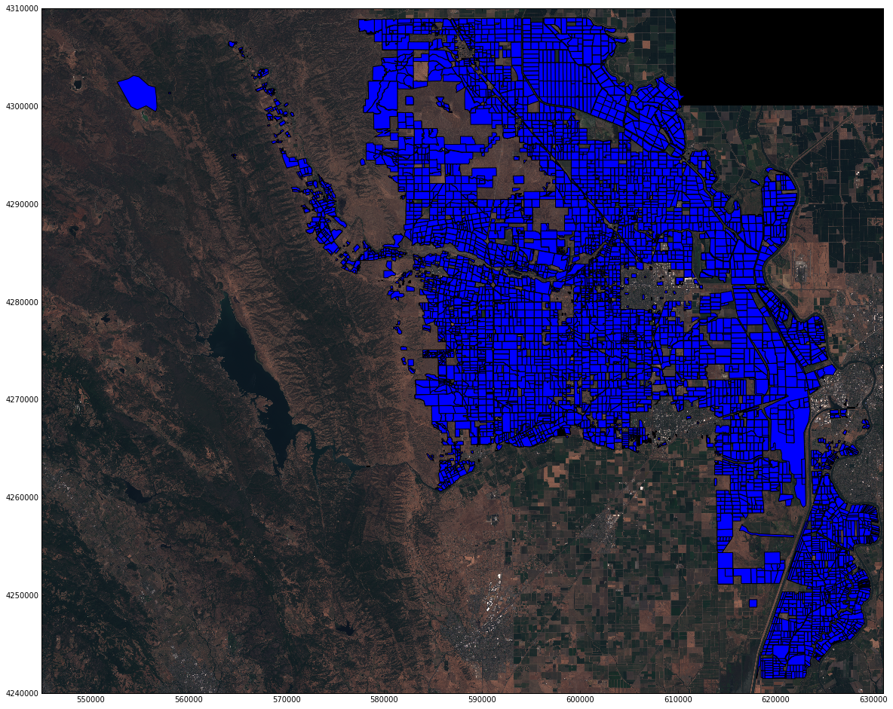

Consulting Projects
Citibank Monitorship
The Citibank Monitorship was my second project involving RShiny. I encountered three roadblocks while creating these maps, but overcame them in order to build simple, quick, dashboards using leaflet. The three roadblocks were:
- Managing a Linux AWS Instance
- Understanding React and how to use React with drop down filters
- Linking Javascript events to RShiny
Overcoming the three roadblocks required careful reading of Linux Centos and R dev install documents, watching RShiny youtube videos to better understand React and R, and working with the internal web development team on creating JS elements and linking those elements to the R Shiny backend.In the end the monitor was pleased with the result and I was excited about using a Rshiny rather than other standard BI tools to experiment in more creatives designs.
Senior Project
Satellite Imagery Crop Classification
In my senior year I took a class that focused on creating and developing a single data science project. For this project, I worked with a group on classifying a type of crop in a crop field. This project required my group to learn how to work with USGS APIs, understand GIS Cloud containers, and how to run supervised learning models on abstract data sources. The most difficult part of the project was coming up with a method to manipulate a satellite image into something we could use to train a supervised learning model. By reading different papers on crop classifciation and using satellite imagery in supervised learning we were able to create a usable data set by using the history of crop fields in Yolo County, CA to cut out individual crop fields in the satellite imagery and use aggregated pixel color information to predict crop types. This project definitely tested my abiilty to quickly learn about a subject and also learn how to use data that is abstract in the sense that it's not simply columnar.
Locations of Crops in Yolo County CA
